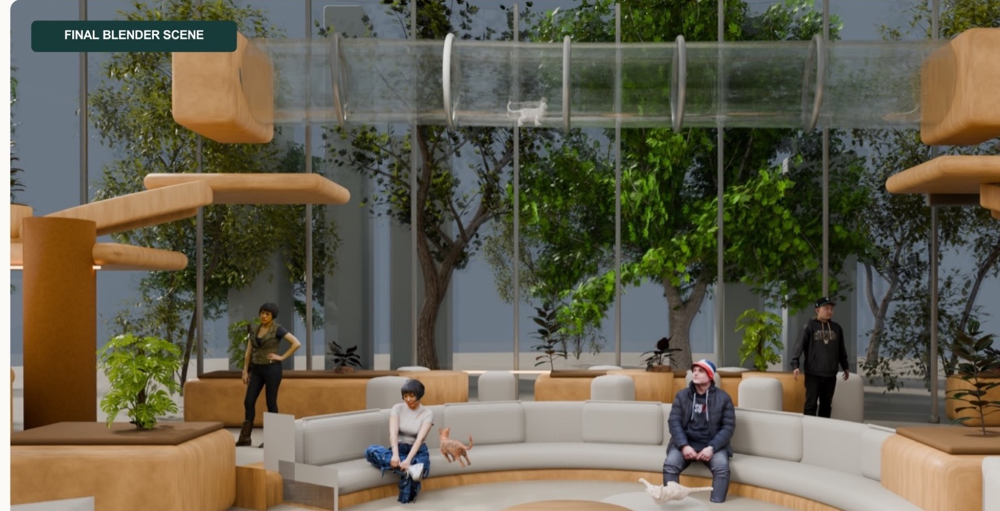
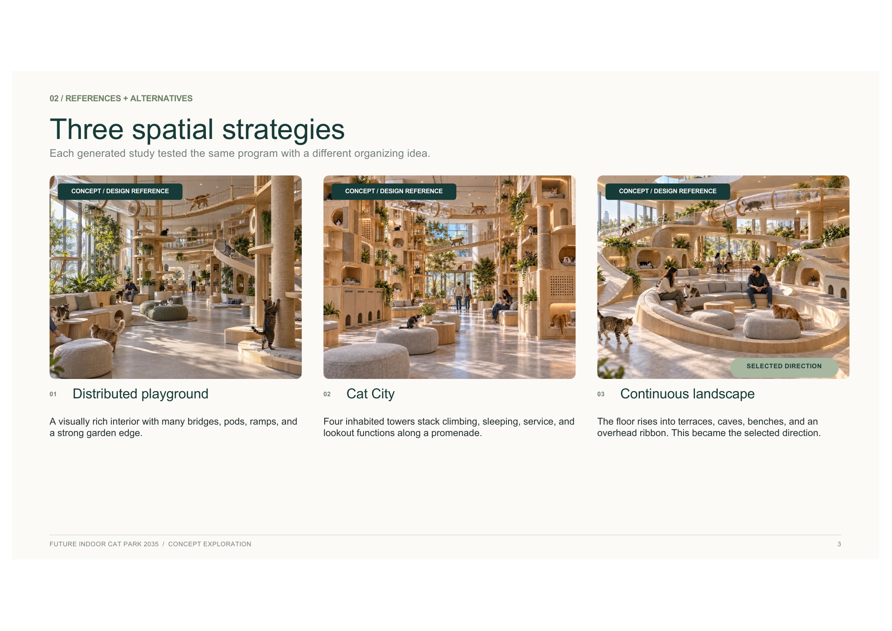
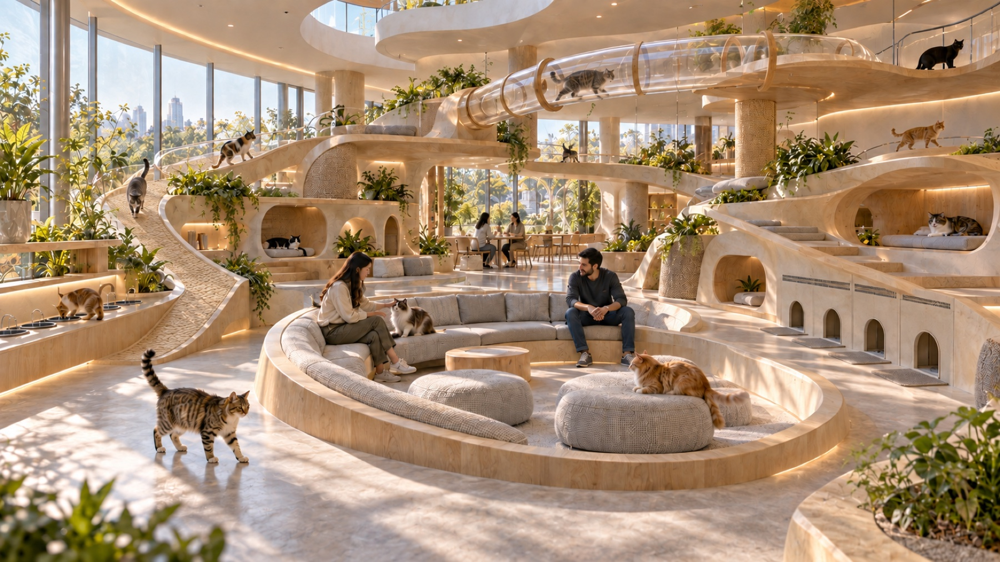
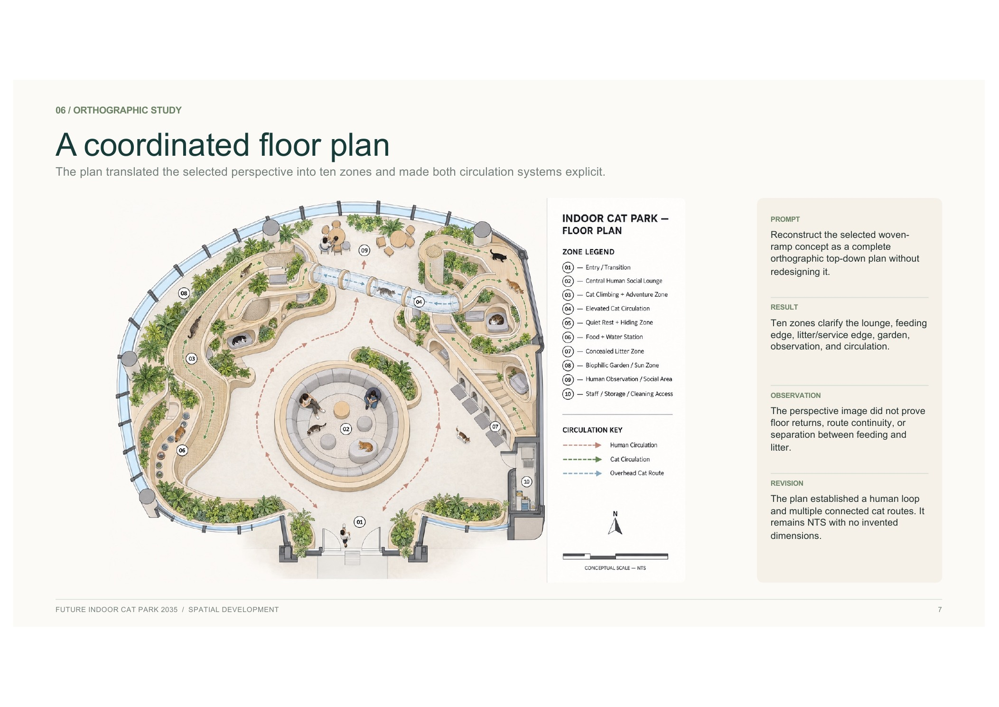
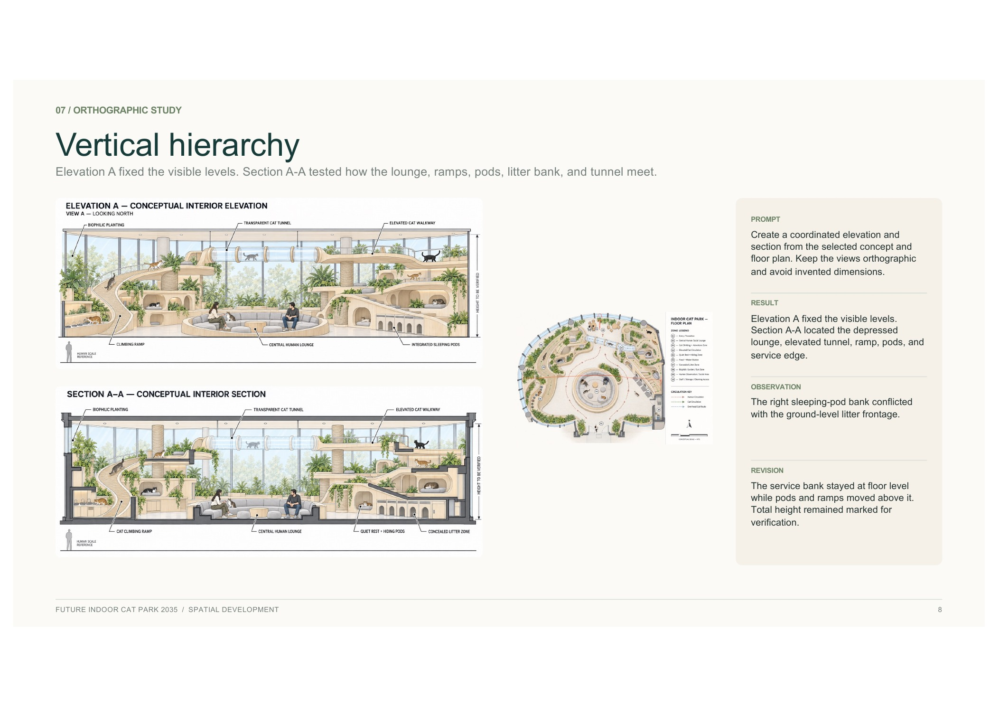
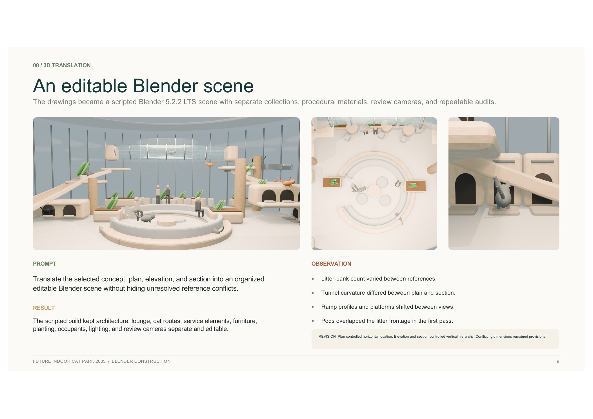
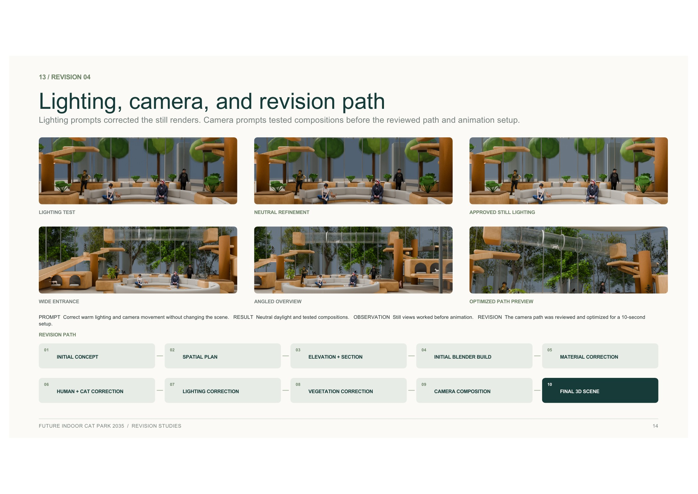
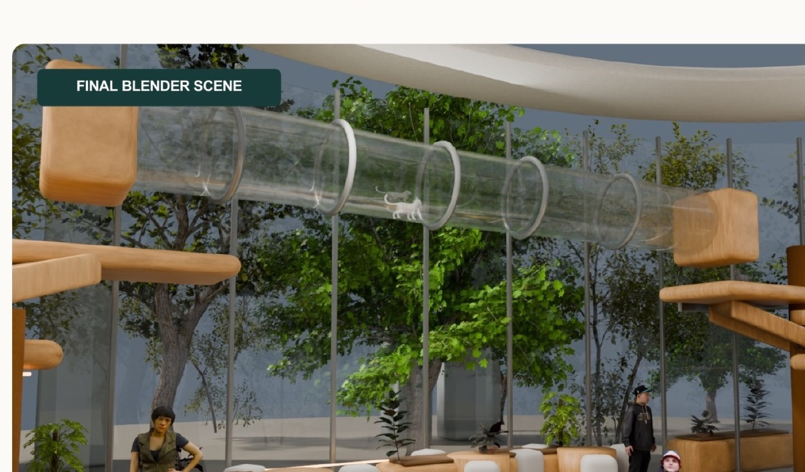
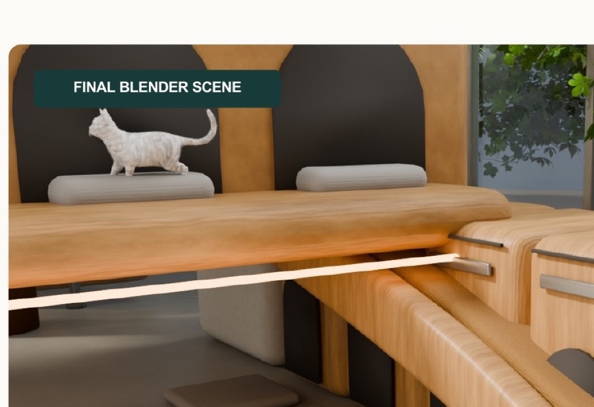

02 / Spatial Design / 2026
Future Indoor
Cat Park 2035

Architecture becomes enrichment instead of furniture placed inside a room.
The 2035 concept supports climbing, hiding, resting, scratching, observation, feeding, and service while keeping human circulation understandable at ground level.
Cats move vertically.
Ramps, pods, platforms, sisal columns, and a transparent tunnel create connected routes rather than isolated jumps.
People keep a clear loop.
The central lounge provides a social focus while feeding, litter, rest, and service functions stay legible around the edge.
Spatial Development
Three organizing ideas.
Distributed playground, Cat City, and Continuous Landscape tested the same program through different spatial structures.

AI Concept / Reference
Atmosphere before verification.
This image established warmth, planting, curved timber, and the central lounge. It is a design reference—not the final modeled environment.

Spatial Development
The image became a plan.
Ten zones made the human loop, connected cat routes, feeding edge, litter zone, garden, observation, and staff access explicit.

Spatial Development
Then the levels had to meet.
Elevation and section coordinated the depressed lounge, ramps, pods, elevated tunnel, and concealed service edge without inventing unverified dimensions.

Blender Development
An editable scene exposed the conflicts.
The Blender build separated architecture, furniture, planting, occupants, lighting, and review cameras. Conflicting ramp, tunnel, and service relationships could then be revised rather than hidden.


Final Blender Environment
One connected elevated network.
The final modeled scene links the left and right cat landscapes above the circular human lounge, with a separate service edge at floor level.


Walkthrough
Move through the modeled environment.
A ten-second camera path passes the central lounge, transparent tunnel, and right-side cat landscape.
Visual description: the camera moves laterally through the central circular lounge beneath the transparent overhead cat tunnel and toward the right-side platforms.